MAHABODHI TEMPLE
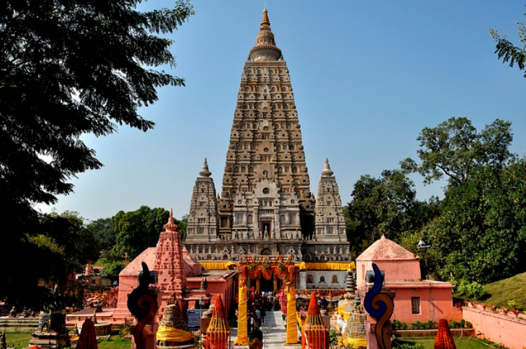Visit the Mahabodhi temples that are one of the four holy grounds of Buddhism. This is the spot where the Buddha is said to have attained enlightenment while meditating under a fig tree. The Bodhi tree is the descendant of the Fig tree and lies just near the temple. The earliest temple was built by Ashoka in the 3rd century BC. The temple has a massive statue of Buddha touching the earth with this right hand.
The Mahabodhi Temple (literally: "Great Awakening Temple"), a UNESCO World Heritage Site, is an ancient, but much rebuilt and restored, Buddhist temple in Bodh Gaya, marking the location where the Buddha is said to have attained enlightenment.[1] Bodh Gaya (in Gaya district) is about 96 km (60 mi) from Patna, Bihar state, India.
The site contains a descendant of the Bodhi Tree under which Buddha gained enlightenment, and has been a major pilgrimage destination for Buddhists for well over two thousand years, and some elements probably date to the period of Asoka (died c.232 BCE). What is now visible on the ground essentially dates from the 7th century CE, or perhaps somewhat earlier, as well as several major restorations since the 19th century. But the structure now may well incorporate large parts of earlier work, possibly from the 2nd or 3rd century CE.
Many of the oldest sculptural elements have been moved to the museum beside the temple, and some, such as the carved stone railing wall around the main structure, have been replaced by replicas. The main temple's survival is especially impressive, as it was mostly made of brick covered with stucco, materials that are much less durable than stone. But this means that very little of the original sculptural decoration has survived.
The temple complex includes two large straight-sided shikhara towers, the largest over 55 metres (180 feet) high. This is a stylistic feature that has continued in Jain and Hindu temples to the present day, and influenced Buddhist architecture in other countries, in forms like the pagoda.
The Buddha
Traditional accounts say that, around 589 BCE,[citation needed] Siddhartha Gautama, a young prince who saw the suffering of the world and wanted to end it, reached the forested banks of the Phalgu river, near the city of Gaya, India. There he sat in meditation under a peepul tree which later became known as the Bodhi tree. According to Buddhist scriptures, after three days and three nights, Siddharta attained enlightenment and the answers that he had sought. In that location, Mahabodhi Temple was built by Emperor Ashoka in around 260 BCE.
The Buddha then spent the succeeding seven weeks at seven different spots in the vicinity meditating and considering his experience. Several specific places at the current Mahabodhi Temple relate to the traditions surrounding these seven we are:
- The first week was spent under the Bodhi tree.
- During the second week, the Buddha remained standing and stared, uninterrupted, at the Bodhi tree. This spot is marked by the Animeshlocha Stupa, that is, the u
- nblinking stupa or shrine, to the north-east of the Mahabodhi Temple complex. There stands a statue of Buddha with his eyes fixed towards the Bodhi tree.
- The Buddha is said to have walked back and forth between the location of the Animeshlocha Stupa and the Bodhi tree. According to legend, lotus flowers sprung
- up along this route; it is now called Ratnachakrama or the jewel walk.
- He spent the fourth week near Ratnagar Chaitya, to the north-east side.
- During the fifth week, Buddha answered in details to the queries of Brahmins under the Ajapala Nigodh tree, now marked by a pillar.
- He spent the sixth week next to the Lotus pond.
- He spent the seventh week under the Rajyatna tree.
The Bodhi tree at Bodhgaya is directly connected to the life of the historical Buddha, Siddhartha Gautama, who attained enlightenment or perfect insight when he was meditating under it. The temple was built directly to the east of the Bodhi tree, supposedly a direct descendant of the original Bodhi Tree.
According to Buddhist mythology, if no Bodhi tree grows at the site, the ground around the Bodhi tree is devoid of all plants for a distance of one royal karīsa. Through the ground around the Bodhi tree no being, not even an elephant, can travel.
According to the Jatakas, the navel of the earth lies at this spot, and no other place can support the weight of the Buddha's attainment. Another Buddhist tradition claims that when the world is destroyed at the end of a kalpa, the Bodhimanda is the last spot to disappear, and will be the first to appear when the world emerges into existence again. Tradition also claims that a lotus will bloom there, and if a Buddha is born during that the new kalpa, the lotus flowers in accordance with the number of Buddhas expected to arise According to legend, in the case of Gautama Buddha, a Bodhi tree sprang up on the day he was born.
Decline
Buddhism declined when the dynasties patronizing it declined, following Huna invasions and the early Arab Islamic invasions such as that of Muhammad bin Qasim. A strong revival occurred under the Pala Empire in the northeast of the subcontinent (where the temple is situated). Mahayana Buddhism flourished under the Palas between the 8th and the 12th century. However, after the defeat of the Palas by the Hindu Sena dynasty, Buddhism's position again began to erode and became nearly extinct in India. During the 12th century CE, Bodh Gaya and the nearby regions were invaded by Muslim Turk armies. During this period, the Mahabodhi Temple fell into disrepair and was largely abandoned. Over the following centuries, the monastery's abbot or mahant position became occupied by the area's primary landholder, who claimed ownership of the Mahabodhi Temple grounds.
In the 13th century, Burmese Buddhists built a temple with the same name and modelled on the original Mahabodhi Temple.
Architectural style
Mahabodhi Temple is constructed of brick and is one of the oldest brick structures to have survived in eastern India. It is considered to be a fine example of Indian brickwork, and was highly influential in the development of later architectural traditions. According to UNESCO, "the present temple is one of the earliest and most imposing structures built entirely in brick from Gupta period" (300–600 CE).[3] Mahabodhi Temple's central tower rises 55 metres (180 ft), and were heavily renovated in the 19th century. The central tower is surrounded by four smaller towers, constructed in the same style.
The Mahabodhi Temple is surrounded on all four sides by stone railings, about two metres high. The railings reveal two distinct types, both in style as well as the materials used. The older ones, made of sandstone, date to about 150 BCE, and the others, constructed from unpolished coarse granite, are believed to be of the Gupta period. The older railings have scenes such as Lakshmi, the Hindu/Buddhist goddess of wealth, being bathed by elephants; and Surya, the Hindu sun god, riding a chariot drawn by four horses. The newer railings have figures of stupas (reliquary shrines) and garudas (eagles). Images of lotus flowers also appear commonly.
Images of the site include Avalokiteśvara (Padmapani, Khasarpana), Vajrapani, Tara, Marichi, Yamantaka, Jambhala and Vajravārāhī. Images of Vishnu, Shiva, Surya and other Vedic deities are also associated with the site.
Interesting fact: The Bodhimanda is the spot under the Bodhi tree where the Buddha attained enlightenment. It is believed that this spot will be the last to disappear when the world ends and the first to reappear when the world is recreated.
Entry fee: None
Open from: 5 am- 9 pm
Must see: The Jewel Walk here is the spot where the Buddha is said to have gone on a seven days walking meditation after he was enlightened.
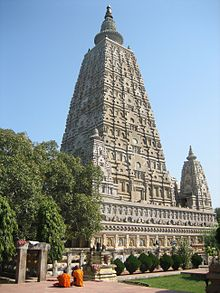
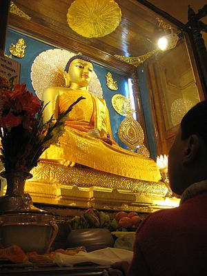
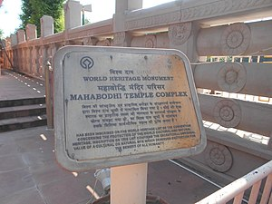
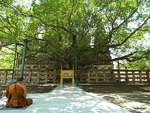
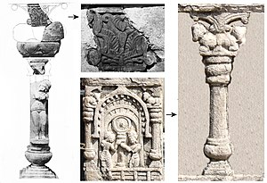
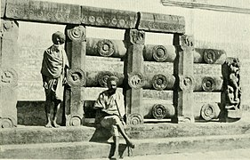
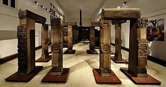
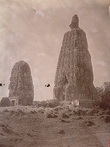
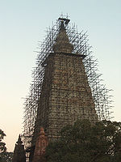
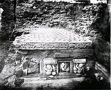
Developed By: Vineet Choudhary